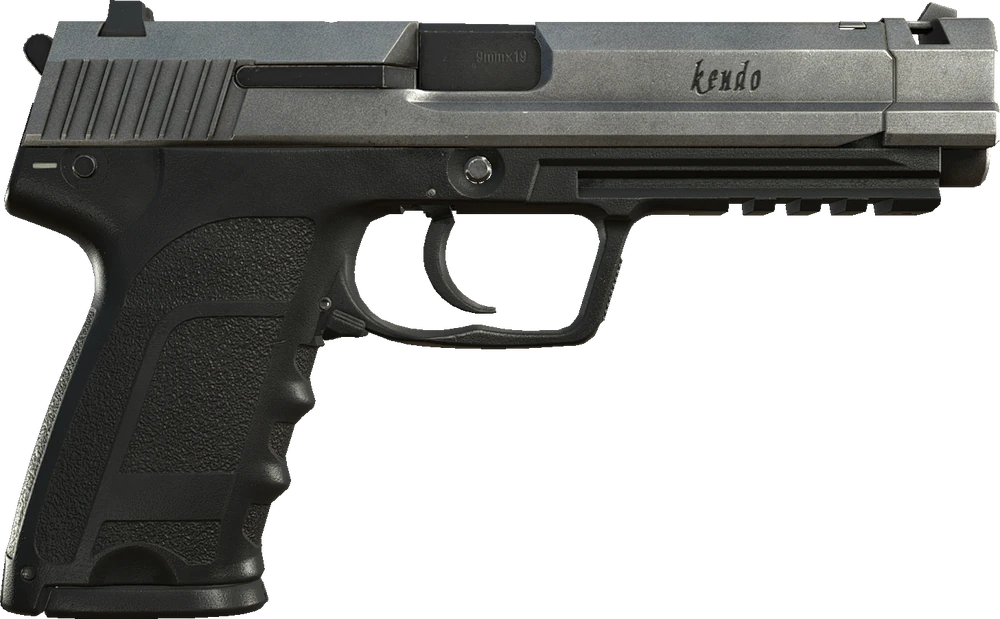
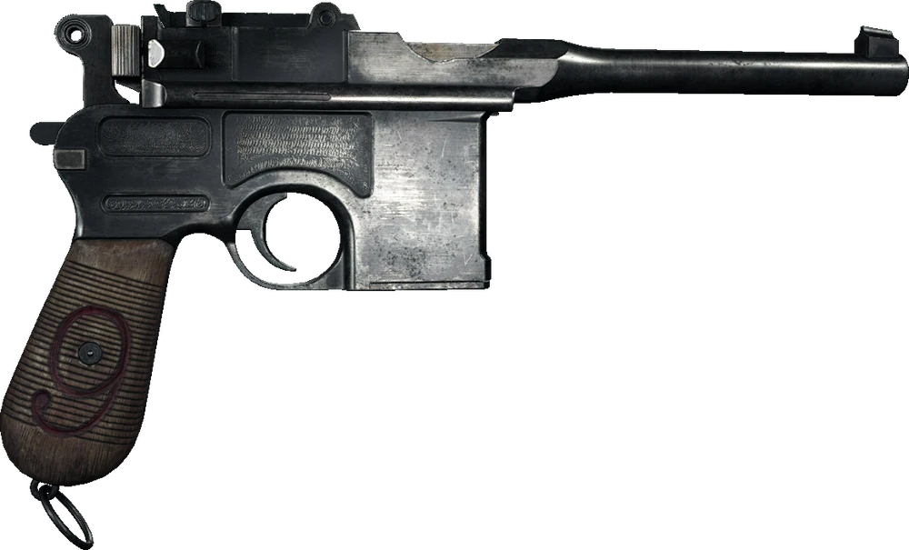

ПистолетСтартовое оружие Леона
SG-09 R
Пистолет, изготовленный специально для Леона. Он выглядит как обычный MUP, но каждый модуль был подобран вручную и обработан на станке для улучшения боевых качеств.
Снаряжение Леона / Resident Evil
Восемь ключевых единиц оружия из миссии в Испании: от верного стартового пистолета до ножа, проверенного в бою.
Ближняя дистанция

ПистолетСтартовое оружие Леона
Пистолет, изготовленный специально для Леона. Он выглядит как обычный MUP, но каждый модуль был подобран вручную и обработан на станке для улучшения боевых качеств.

ПистолетНаходка в главе 4
Мощный пистолет. На ручке выжжена большая красная цифра 9, чтобы стрелок не пытался зарядить его патронами другого калибра.
Остановка толпы
 Дробовик
Дробовик
Находка в главе 1
Помповый дробовик 12-го калибра. Снискал популярность за простоту в использовании и прочный стальной корпус.
Точный выстрел
 Винтовка
Винтовка
Доступна у торговца с главы 2
Мощная винтовка с продольно-скользящим затвором. Особенно эффективна при попадании в уязвимые точки.
Последний рубеж
 Нож
Нож
Стартовое оружие Леона
Основной нож Леона и его надёжный инструмент для ближнего боя. Лезвие можно улучшать и ремонтировать.
 Нож
Нож
Награда за главу 14
Фирменный нож Краузера, который Леон получает после схватки с ним. Бьёт сильнее стартового ножа.
Особое снаряжение
 Специальное
Специальное
Можно купить у торговца
Одноразовый гранатомёт для нанесения огромного урона. Помогает быстро расправиться с особо сильными противниками.
 Специальное
Специальное
Особое оружие
Огнемёт с резервуаром для химической смеси. Узнаваемый образец тяжёлого специального вооружения.